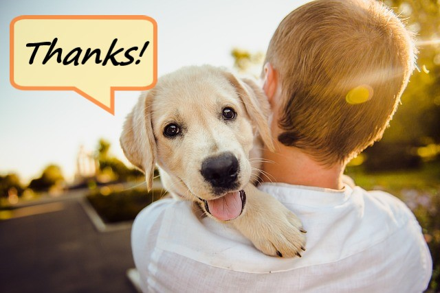

Our Pets Are Looking for Someone Like You

Because of tough economic times, fewer people can afford to keep their pets. So the number of homeless animals in and around Springfield is increasing dramatically.
Pets to Go is a nonprofit, no-kill animal shelter serving the Springfield area. Our mission is to give these homeless animals a second chance through our rescue, shelter, and adoption programs.
We were founded in 2009 with a few simple goals: save and place cats and dogs in new homes, and educate the public about spaying and neutering their pets.
We're now one of the largest no-kill shelters in the state! Each year, Pets to Go helps more than 1,300 cats and dogs find permanent homes.
VOLUNTEERS: We can always use a hand! You can help by caring for our homeless cats and dogs, keeping the shelter clean, helping us raise funds, or fostering pets. Find out about becoming a Pets to Go volunteer.
SPAY/NEUTER CLINIC: Spaying or neutering your pet is the best way to stop the flood of homeless animals in Springfield. Our modern spay and neuter clinic has a top-notch professional team.
ANIMAL RESCUE: Our animals come from overcrowded area shelters, local families that can no longer care for their dog or cat, and rescue groups throughout the state. We give homeless, abandoned, and sometimes abused animals a second chance at a healthy, happy life with a caring guardian.
REHABILITATION: Pets to Go retrains animals with behavioral problems to be better companions in their new homes. And after the adoption, we're here to help with behavior consultations, training classes, and more.
 Website created by Lily Ellison of The Bead Dragon
Website created by Lily Ellison of The Bead Dragon

Photos courtesy of contributors on pixabay.